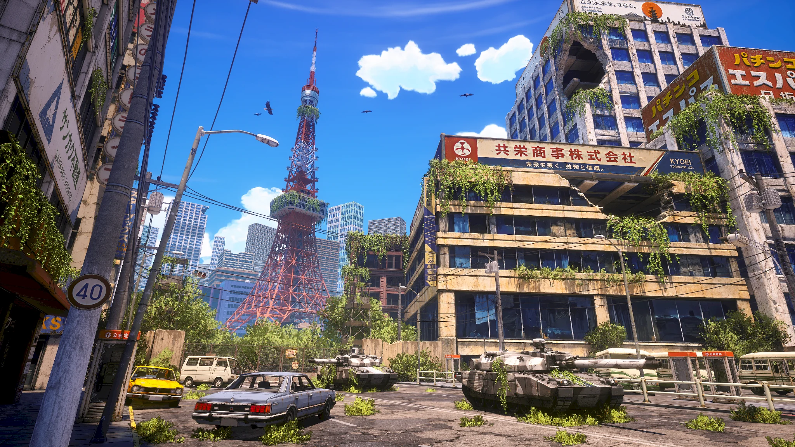
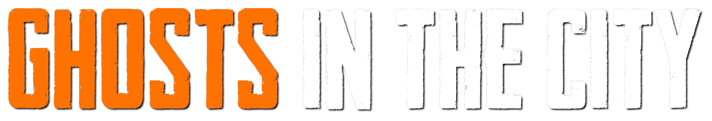

01
Explore
Move through dense districts, rooftops, abandoned streets and underground spaces in a seamless Tokyo.


Meteorites shattered Tokyo. The city is now abandoned, hostile and filled with new threats. Four survivors — the “Ghosts” — must explore, track, fight and survive.
Move through dense districts, rooftops, abandoned streets and underground spaces in a seamless Tokyo.
Each Ghost brings a unique sensory ability that changes how the team finds threats, clues and paths.
Face military forces, wild animals and deadly creatures with weapons, vehicles and the environment itself.
Scavenge resources, craft equipment, build traps and adapt to a dynamic day/night world.
Find abandoned civilian and military vehicles, repair them and use them for exploration, transport and combat.
Watch the official teaser, then take a longer walk through the streets of Tokyo, 1982.
Wishlist Ghosts in the City and follow future announcements.
Join the community and discuss the game with the team and other players.
See development posts, discussions and new footage on our subreddit.
Acid Pixel Studios is currently looking for publishing and investment partners to support the development and launch of Ghosts in the City.
Interested in discussing publishing, investment, distribution or another business opportunity?
Contact Acid Pixel Studios